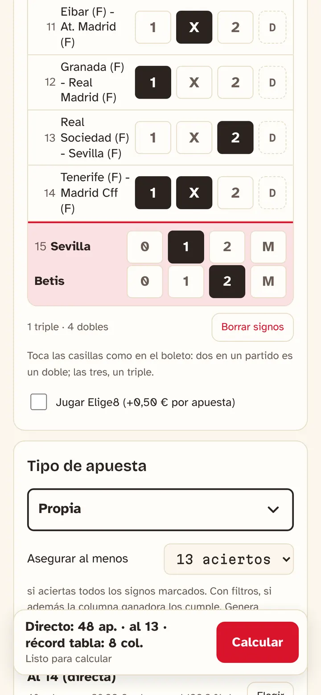
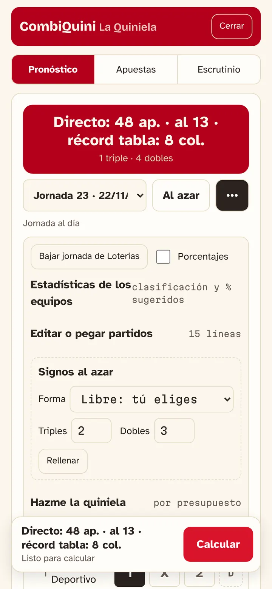
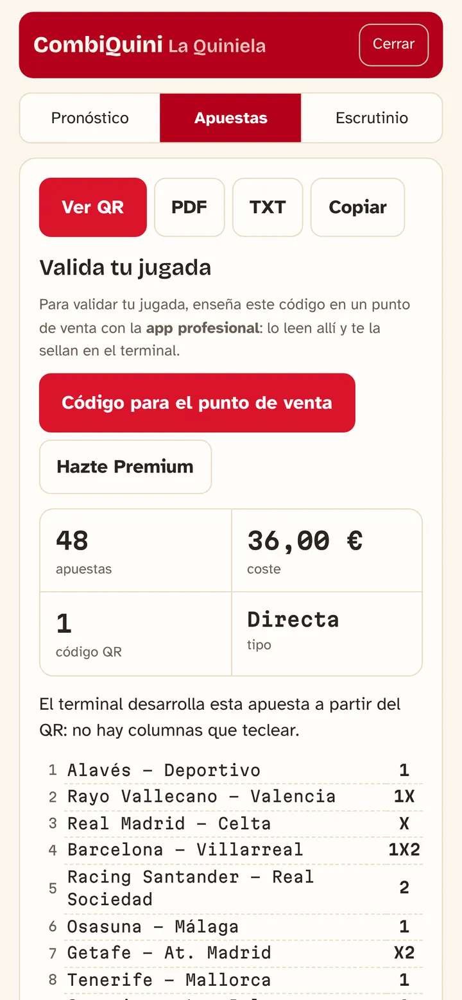
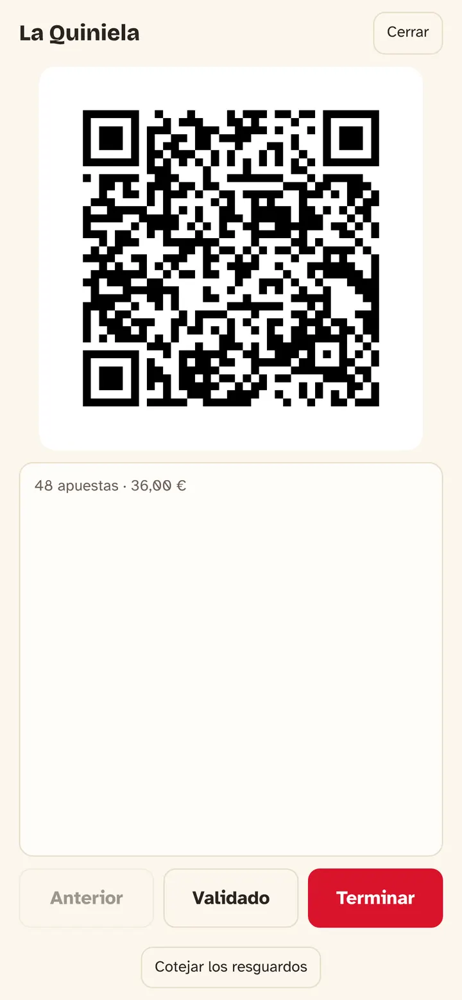

La Quiniela
App independiente. Combinario no es oficial ni tiene relación con Loterías y Apuestas del Estado (SELAE). No vende apuestas: solo te ayuda a prepararlas, y se validan y se pagan en un punto de venta. Solo para mayores de 18 años.
En la app se llama CombiQuini. Tiene tres pestañas: Pronóstico (marcar los signos), Apuestas (lo que sale) y Escrutinio (comprobar).
Pronóstico, como el boleto
- Arriba, un resumen grande: cuántas apuestas, qué tipo y cuántos triples y dobles llevas.
- Debajo, tres botones: Jornada (los partidos se ponen solos), Al azar y «…» (más opciones).
- La tabla tiene las columnas Partido, 1, X y 2. Toca las casillas como en el boleto: una es un signo; dos en un partido, un doble; las tres, un triple. Las casillas marcadas se ponen en negro.
- La columna «Dir.» deja un partido al directo (no se reduce) en las reducciones propias.


Pleno al 15 y Elige8
El Pleno al 15 va debajo de los 14 partidos: el «15» delante del equipo de casa y una fila para cada equipo con 0, 1, 2 o M (3 o más goles). Puedes marcar varios resultados en cada equipo: cada pareja local-visitante es un pleno y las apuestas se multiplican. Para cobrarlo hay que acertar los dos equipos y los 14 partidos.
Elige8 se marca justo debajo (+0,50 € por apuesta): eliges 8 partidos y se juegan con los signos de la primera columna.
Más opciones («…»)
El botón «…» abre: bajar la jornada de Loterías, porcentajes (los tuyos y los % jugados por la gente), estadísticas de los equipos, editar o pegar partidos, «Signos al azar» y «Hazme la quiniela» por presupuesto.


Tipo de apuesta
Toca el botón de «Tipo de apuesta» y elige en la lista:
| Tipo | Qué hace |
|---|---|
| Catálogo | Marcas triples y dobles y la app pone el mejor sistema que conoce. |
| Directa | Todas las combinaciones de tus dobles y triples. Va en un solo QR. |
| Reducida | Las reducidas oficiales de Loterías. Las desarrolla el terminal y va en un solo QR. |
| Condicionada | Limitas cuántas X, 2 o variantes salen entre los partidos que marques con C. |
| Propia | La app calcula sus columnas con la garantía (al 14, 13, 12…) y los filtros que elijas. |
| Al azar | Columnas sorteadas entre tus signos. No da garantía de premio. |
| Experto | Reducción con todos los filtros, módulos o las mejores columnas. |
En las reducciones de la app también eliges Normal o Super reducida, como en las loterías: la super da la misma garantía con menos columnas cuando la app conoce un sistema más pequeño.
La app te avisa si te pasas del máximo de un boleto: 31.104 apuestas en la directa contando los plenos.
Tablas de la Quiniela
Reducciones propias de la app
| Tus signos | Garantía | Columnas | Coste | En directa |
|---|---|---|---|---|
| 3 triples y 3 dobles | 13 aciertos | 24 | 18,00 € | 216 col. · 162,00 € |
| 5 triples | 13 aciertos | 27 | 20,25 € | 243 col. · 182,25 € |
| 4 triples y 3 dobles | 13 aciertos | 72 | 54,00 € | 648 col. · 486,00 € |
| 6 triples | 13 aciertos | 73 | 54,75 € | 729 col. · 546,75 € |
| 3 triples y 6 dobles | 13 aciertos | 190 | 142,50 € | 1728 col. · 1.296,00 € |
| 9 triples | 10 aciertos | 22 | 16,50 € | 19683 col. · 14.762,25 € |
| 8 triples | 11 aciertos | 27 | 20,25 € | 6561 col. · 4.920,75 € |
| 7 triples | 12 aciertos | 35 | 26,25 € | 2187 col. · 1.640,25 € |
| 5 triples y 3 dobles | 12 aciertos | 38 | 28,50 € | 1944 col. · 1.458,00 € |
| 6 triples y 2 dobles | 12 aciertos | 48 | 36,00 € | 2916 col. · 2.187,00 € |
| 9 triples | 11 aciertos | 74 | 55,50 € | 19683 col. · 14.762,25 € |
Reducción «Propia», normal, tal como la da la app. Cada fila está comprobada con todos los resultados posibles de tus signos: si aciertas todos los signos que marcas, al menos una columna tiene esos aciertos. Si fallas algún signo, no está asegurado.
Reducidas oficiales de Loterías
| Reducida oficial | Signos | Apuestas | Coste |
|---|---|---|---|
| 3ª | 3 triples + 3 dobles | 24 | 18,00 € |
| 4ª | 2 triples + 6 dobles | 64 | 48,00 € |
| 5ª | 8 triples | 81 | 60,75 € |
| 6ª | 11 dobles | 132 | 99,00 € |
Reducidas oficiales de Loterías de 15 € o más. La app prepara un solo QR y el terminal desarrolla las columnas.
Una quiniela directa se calcula multiplicando: cada doble por 2 y cada triple por 3. Por ejemplo, 1 triple y 4 dobles son 3 × 2 × 2 × 2 × 2 = 48 columnas (36,00 €). Más ejemplos en la portada de combinario.es.
Apuestas
Al pulsar «Calcular» pasas a Apuestas: número de apuestas, coste y cuántos QR. Desde aquí llevas la jugada al punto de venta (ver cómo), la guardas con un nombre o la comparas con otra.


Escrutinio
Elige la jornada (o pega el resultado) y pulsa «Comprobar». También tienes «Marcadores en directo», «Escrutinio de prueba» (cuenta los fallos mientras se juega la jornada), «¿Qué resultados me convienen?» y «Estimar premios», que es solo orientativo: vale el escrutinio oficial de Loterías.